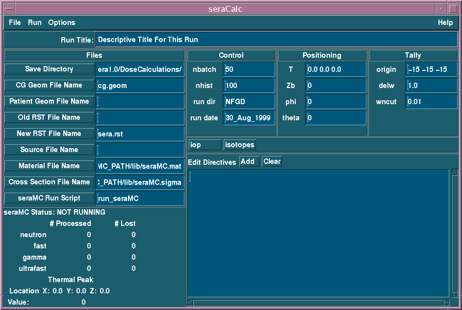
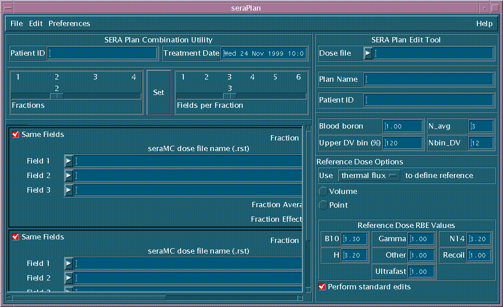

SERA:
Simulation Environment for Radiotherapy
Applications
User's Manual
Version 1C0

SERA:
Simulation Environment for Radiotherapy
Applications
User's Manual
Version 1C0

3. Getting Started
To operate properly, SERA relies on the existence of several ancillary files in specified locations within the user's UNIX file system. These files control the appearance of the various user interfaces within the SERA system, provide physical property information, colormaps, and contextual help, and store user-specific preferences. There is one file, usually in the user's home directory, called .serarc, that provides the information the operating system needs in order to determine the location of these ancillary files. In UNIX parlance, this file is "sourced" when the user login shell is started. If this procedure is unfamiliar to you, check with your local UNIX or X-Windows expert. An example of this file follows:
# .serarc: sets up the enviroment varaiables
for SERA. There are
# several ways to make this file take
effect. See your system
# administrator for the best way.
setenv SERA_HOME $HOME/sera1
# SERA_RESOURCES locates resource information
setenv SERA_RESOURCES $SERA_HOME/Resources
# set location for X11 resource files
setenv XUSERFILESEARCHPATH $SERA_RESOURCES/app-defaults/%N
# set documentation paths
setenv SERA_HELP $SERA_HOME/Docs/dialog_help
setenv FILES_MANUAL_PATH $SERA_HOME/Docs/Manuals/sera1/
setenv NET_MANUAL_PATH http://www.cs.montana.edu/~bnct/manual/
#seraMC resources
setenv SERAMC SeraMC
setenv SERAMC_PATH $SERA_HOME/$SERAMC
By default, all of the SERA executable binaries are installed in $HOME/sera1/Target/bin, and this directory path should be in the user's "path" environment variable. The default installation directory structure under the user's home directory should appear similar to what is shown in Figure 3.1. Most of the SERA distributions will reflect this directory structure and for most cases the user can place the the gzipped tar file included in the distribution CD (eg sera1C0linux.tar.gz) in the appropriate directory, usually the user's home directory, and unzip and extract the the tar archive(eg tar xvzf sera1C0linux.tar.gz.)
Figure 3.1. Default UNIX directory structure for the SERA system.
There should be a README
file included with your software distribution that will detail this information,
but if you are not familiar with UNIX and X11, try to get help from your
local system administrator.
Once SERA is properly installed, the user issues the command seraMenu from the command line, and the main menu, as shown in Figure 3.2, should appear. If the response is Command not found, the UNIX path variable may not be properly set. If the program runs, but the menu appearance is strange (i.e. poor color choices, odd fonts, or inappropriate font sizes), it is likely your X11 server has not found the SERA resource file.
Figure 3.2. SERA Main Menu (seraMenu).
Buttons are provided to execute the five main
functions within SERA, which include the image formatter, image editor,
3D viewer, dose display utilities, and dose calculation utilities.
These functions/utilities may also be executed from the operating system
prompt (command line), but the main menu accomodates certain advanced features,
such as changing displays, monitoring the processes initiated from the
main menu, setting global preferences, and other features. Each function
can execute the other functions (cross-launch capability), so the ability
to monitor the various processes can be a necessity. The seven main
modules of SERA will be briefly discussed in turn in the remainder of this
section.
3.2. Image Formatter (seraImage)
Most of the treatment plans developed with SERA will begin with seraImage. Its basic function is to convert the original image format into the Qsh format, which is the internal format used within the SERA modules. The image formatter is discussed at length in Section 4. Shown in Figure 3.3 is the image formatter's user interface with the File pulldown selected.
Figure 3.3. Image Formatter user interface (seraImage).
The image formatting function will accept unformatted
(raw) and dicom images. It will also allow the user to edit images already
in the Qsh format. Images may be deleted, image header information
may be changed, and the images may be translated or rotated.
After the image information has been prepared,
image editing with the seraModel module is usually the next step in the
treatment planning process. This is discussed at length in Section
5. The user interface for seraModel is shown in Figure 3.4, with
the File pulldown
selected.
Figure 3.4. Image Editor user interface (seraModel).
The purpose of the seraModel module is to more easily and rapidly break an image set into regions of interest. The image matrix used for display in this program has been generalized to work on systems with different color depths, and to view an arbitrary number of columns of images at an arbitrary zoom level in an arbitrary window size.
The image editor provides many useful image
operations, including manual and automatic definition and generation of
univel-based regions of interest, which form the geometry used by the Monte
Carlo radiation transport simulation. Various image processing tools,
including region copying, scaling, overwriting, and painting by fill or
borders, are provided to aid in the manual definition of these regions.
Threshold-based segmenting, 3D region growing, body copying, and automatic
target definition operations are also provided.
3.4. Three-Dimensional Viewer (sera3d)
After all of the bodies are created with seraModel, the three dimensional viewer, sera3d, which is detailed in Section 6, provides flexible three-dimensional displays of the univel-based solid models (see Figure 3.5) and isodose contour data. Points/lines, solid volume elements, or hollow volume elements can be used to view the geometry.
Figure 3.5. Three-dimensional viewer user interface (sera3d).
Two clipping planes are provided in each of
the three orthogonal directions. The images used to define the regions
in the image editing step may be inlaid into the viewing window via the
texture map. The beam line and selected particles may also be displayed
in the viewing window. A unique feature for viewing two- and three-dimensional
isodose contours is also provided.
The SERA dose contouring utility, seraDose, can be invoked either from the Sera Dose button in the main menu, or directly from the command line by entering seraDose. The two-dimensional dose display module contours, registers, and displays two-dimensional isodose curves, superimposed over the original image set. It will also display user-selectable dose components, and it permits dose component editing.
Figure 3.6. Two-dimensional dose contour user interface (seraDose).
The seraDose module also allows user-specified contour levels, and
it will report contour values at the current cursor location. Isodose
contours can be represented either as lines or color-washed regions. A
unique dose masking feature is provided to remove unwanted dose curves
in specific regions. Moreover, seraDose will accept either Qsh formatted
or raw 256x256 pixel images. This is further described in Section
9.
The Sera Plot selection from the main menu provides integrated control of dose-depth and dose-volume histogram plotting utilities (Figure 3.7), which post-process the results of the treatment simulation and display the results as dose-volume histograms or depth-dose plots. This module is further described in Section 10.

Figure 3.7. Sera Plot pop-up widget (seraPlot).
The dose-depth plotting utility reads the seraMC standard output and invokes the xmgr generalized two-dimensional plotting code for each encounter of a seraMC line edit. The utility can be run from the Dose Depth Plot button in the seraPlot pop-up widget (see Figure 3.8), which is triggered from the main menu's Sera Plot button. The seraPlot pop-up widget can also be brought up from the command line, by entering seraPlot at the operating system prompt.

Figure 3.8. Dose Depth plotting widget in seraPlot.
Dose depth plots can be shown for either or all of the following dose components:
3.6.2. Dose-Volume Histogram Plotting
The dose-volume histogram plotting utility reads the seraMC standard output and invokes the xmgr plot code for each encounter of a seraMC dose-volume edit. The utility can be run from the Dose Volume Histogram button in the seraPlot pop-up widget (see Figure 3.9), which is triggered from the main menu's Sera Plot button. The seraPlot pop-up widget can also be brought up from the command line, by entering seraPlot at the operating system prompt.
Figure 3.9. Dose-Volume Histogram plotting
widget in seraPlot.
3.7. seraMC Interface (seraCalc)
The seraMC interface for transport modeling can be invoked either from the Sera Calc button of the main menu, or directly from the command line by entering seraCalc. The seraMC interface is shown in Figure 3.10. The user may build a new seraMC input file from scratch or open an existing input file, which can be modified as desired to produce an updated input file. The input can then be run from this interface. The components of this interface are explained in Section 7. The detailed input description of the components appears in the seraMC user's manual.

Figure 3.10. The seraMC input interface
(seraCalc).
3.8. Dose Combination (seraPlan)
The seraPlan module allows the user to statistically combine fields and/or fractions from several independent seraMC calculations, so that single effective doses can be presented. Seraplan can be invoked either from the Sera Plan button in the main menu, or directly from the command line by entering seraPlan. When seraPlan starts, the window in Figure 3.11 will be displayed. The user may select between 1 and 4 fractions and between 1 and 6 fields per fraction. This is discussed further in Section 8.

Figure 3.11. The dose combination widget
(seraPlan).
This section is highly experimental and not generally available to the user community. It is only mentioned here to remind the authors of this manual of incompleted work and, perhaps more importantly, to evoke responses from the user community on accommodating and further developing useful concepts for the SERA system.
This feature is presently under construction. It only works with seraDose; it allows users to specify display and command line parameters.
This feature is not implemented, pending advisement from the user community.
This feature is presently under construction.
3.9.5. Close Launched Applications
This feature allows the user to remove uneeded
processes.
Selecting the Help button changes the user's cursor to a question mark ? character. The user can then select any button on the main menu. After the user selects a button on the main menu, a help prompt widget will appear, similar to Figure 3.12. The help prompt widget gives the user a choice of selecting Dialog Help, a context sensitive help text, Internet Manual, which displays an appropriate section of the manual in the user's web browser, or the Files Manual, which is similar to the Internet Manual selection, except that the source files for the manual are taken from the user's local file system. In most cases, the Internet Manual selection should be the most recent source of information.
Figure 3.12. Help Prompt widget.